JLPT 漢字読み N5 ~ N1
한 칸 차이로 틀립니다.
One square off, and it's wrong.
JLPT 한자 읽기 문제는 장음, 작은 っ, 탁점 하나 차이 나는 보기 사이에, 표기 문제는 소리가 같은 한자 사이에 정답을 숨깁니다. 한 칸은 두 함정을 한국어 한자음으로 풀어 줍니다.
The JLPT's reading questions hide the answer among readings a long vowel, a small っ or a voicing mark away, and its spelling questions among kanji that sound the same. Hankan untangles both with the Korean reading of each kanji.
App Store 출시 준비 중Coming to the App Store
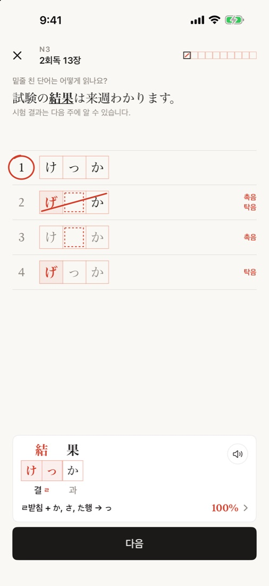
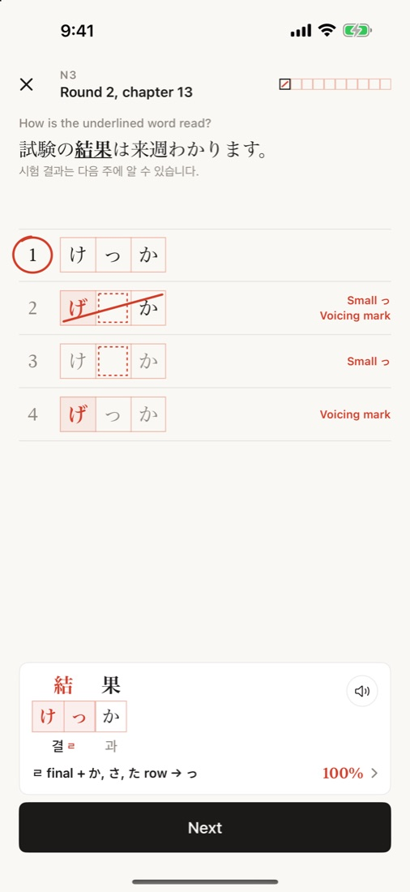
열쇠The key
답은 한국어 한자음에 있어요.
Your Korean already knows.
학은 ㄱ으로 끝나니 学은 く로 끝나고, か 앞에서는 작은 っ로 줄어듭니다. 공(工)처럼 ㅇ으로 끝나면 こう로 한 칸 길어지고, 발(発)처럼 ㄹ로 끝나면 つ가 되어 はっぴょう가 됩니다. 한국어 한자음의 받침이 일본어 읽기의 칸 수를 알려 줍니다.
학 ends in ㄱ, so 学 ends in く — and before か it shrinks to a small っ. A reading that ends in ㅇ, like 공 (工), grows a square: こう. One that ends in ㄹ, like 발 (発), becomes つ: はっぴょう. The final consonant of the Korean reading tells you how many squares the Japanese one takes.
측정한 규칙Measured, not guessed
받침 규칙 16개
Sixteen 받침 rules
JLPT 한자어에서 규칙이 적용되는 자리를 하나하나 세어, 90% 이상 맞은 규칙만 남겼습니다. 앱은 규칙이 실제로 들어맞는 칸에서만, 적중률과 함께 보여 줍니다.
Every place a rule applies in the JLPT kanji words was counted, and only rules that held at least 90% of the time were kept. The app shows a rule only on a square where it holds, always with its rate.
한자음의 끝소리How a reading ends
| ㅇ받침 → 장음long vowel공 こう, 정 せい 1,634 / 1,653 | 98.9% |
| ㅂ받침 → う, つ급 きゅう, 잡 ざつ 263 / 263 | 100% |
| ㄱ받침 → く, き학 がく, 력 りょく 933 / 953 | 97.9% |
| ㄹ받침 → つ, ち발 はつ, 일 いち 676 / 725 | 93.2% |
| ㄴ, ㅁ받침 → ん연 れん, 감 かん 1,988 / 1,990 | 99.9% |
| 받침 없음 (ㅏ ㅣ ㅐ…) → 짧게No final (ㅏ ㅣ ㅐ…) → short가 か, 기 き 2,220 / 2,264 | 98.1% |
| ㅛ로 끝남 → 장음Ending in ㅛ → long vowel요 よう, 교 きょう 170 / 171 | 99.4% |
한자음의 첫소리How a reading starts
| ㅋ ㅌ ㅍ ㅊ → 탁점 없음no voicing mark표 ひょう, 태 たい 845 / 920 | 91.8% |
| ㅁ → ま, ば행 row미 び, 문 ぶん 448 / 449 | 99.8% |
| ㄴ → な, だ행 row남 だん, 내 ない 109 / 119 | 91.6% |
두 한자가 만날 때Where two kanji meet
| ㄱ받침 + か행 row → っ학교 がっこう 34 / 36 | 94.4% |
| ㄱ받침 + さ, た, は행 row → く학생 がくせい 103 / 104 | 99.0% |
| ㄹ받침 + か, さ, た행 row → っ결과 けっか 151 / 151 | 100% |
| ㄹ받침 + は행 row → っぱ발표 はっぴょう 19 / 19 | 100% |
| ん + は행 row → ば, ぱ산보 さんぽ 38 / 38 | 100% |
| っ + は행 row → ぱいっぱい 26 / 26 | 100% |
받침 없이 ㅗ ㅜ ㅠ ㅔ로 끝나는 한자음은 길기도 짧기도 해서(39~73%) 규칙으로 쓰지 않았습니다. 그런 칸은 앱에서 "외울 칸"으로 표시합니다. 두 한자가 만날 때의 규칙은 두 글자 한자어에서만 셌습니다. 한국 한자음은 유니코드 Unihan 데이터베이스를 따릅니다.
Readings with no final consonant ending in ㅗ ㅜ ㅠ ㅔ go either way (39–73% long), so they are not made into rules; the app marks those squares as ones to learn by heart. Rules about two kanji meeting were counted in two-kanji words only. Korean readings follow Unicode's Unihan database.
기능Features
읽기와 표기, 시험 문제 그대로.
Reading and spelling, set like the exam.
읽기 문제, 한 칸씩
Reading, square by square
예문 속 밑줄 친 한자어와 보기 넷. 오답은 시험처럼 장음, 촉음, 탁음, 요음을 하나씩 비틀었고, 사전에 있는 읽기는 오답에서 뺐습니다. 빠진 칸은 빨간 점선 칸으로, 결정적인 받침은 빨갛게 보입니다.
A sentence with the word underlined and four readings, each wrong one a trap away and none a reading a dictionary lists. A dropped square shows as a dashed red square, the deciding final consonant in red.
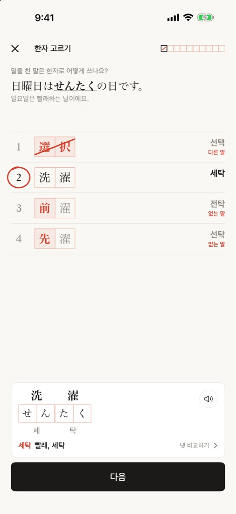
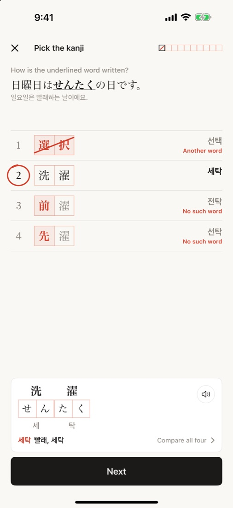
표기 문제: 한자 고르기
Spelling: pick the kanji
せんたく는 洗濯일까 選択일까. 일본어로는 같은 소리라도 한국어로 읽으면 세탁, 선택. 답을 고르면 네 보기의 한자음과 함께 다른 말인지 없는 말인지 알려 줍니다.
Is せんたく 洗濯 or 選択? The same sound in Japanese, 세탁 and 선택 in Korean. After an answer every option shows its Korean reading and whether it is another word or no word at all.
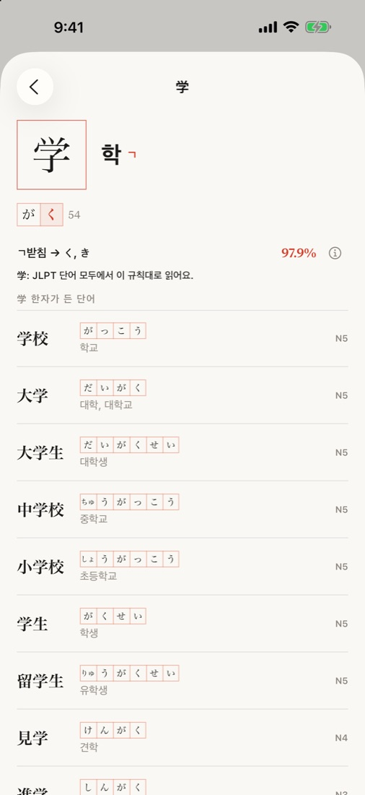
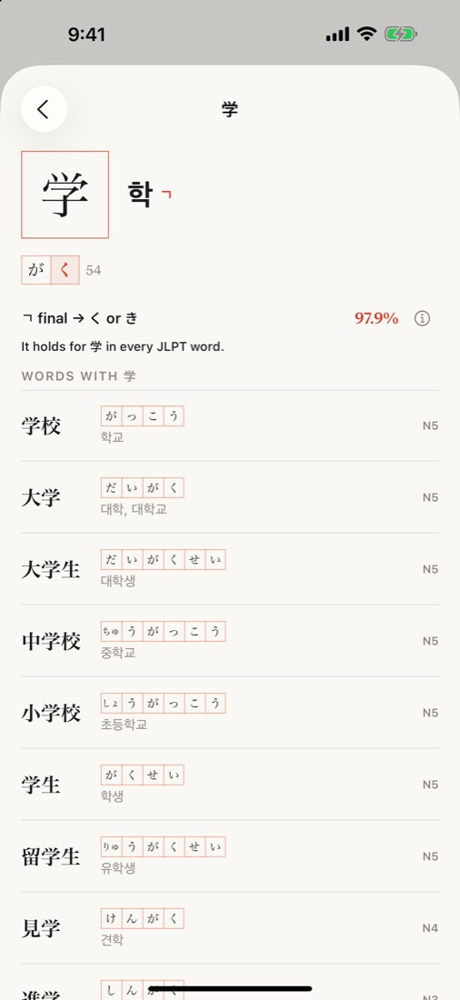
한자음으로 찾기
Look up by 한자음
학을 치면 学. JLPT 한자 1,669자를 한국 한자음으로 찾고, 일본어 음독, 맞는 받침 규칙과 예외 여부, 그 한자가 든 단어를 한 번에 봅니다.
Type 학 to find 学: 1,669 JLPT kanji by their Korean reading, with their Japanese readings, the rule that fits and whether it holds, and the words they are in.
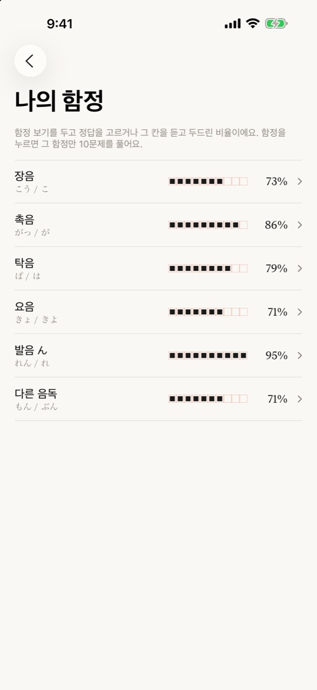
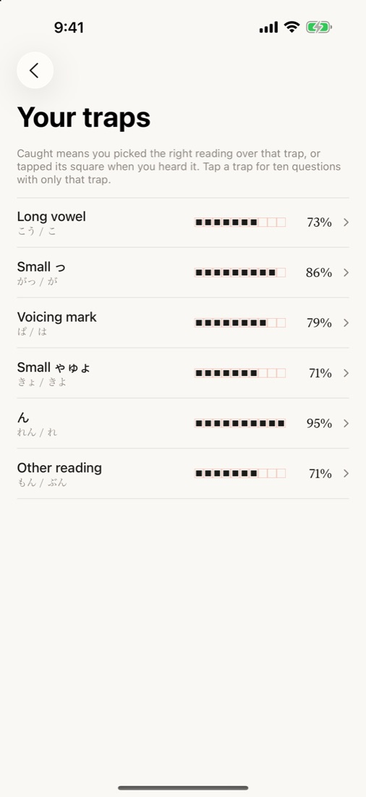
약한 함정만 골라서
Drill the trap that gets you
함정 지도는 장음, 촉음, 탁음 가운데 어디서 자주 걸리는지 보여 주고, 누르면 그 함정만 10문제를 냅니다. 규칙마다 "이 규칙으로 10문제"도 있어요.
The trap map shows which trap keeps catching you; tap one for ten questions on only that trap. Every rule opens ten questions on itself, too.
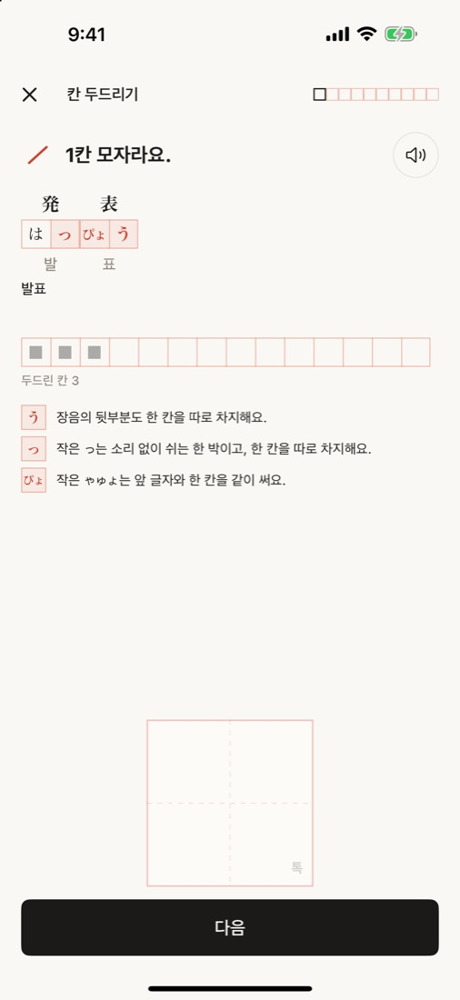
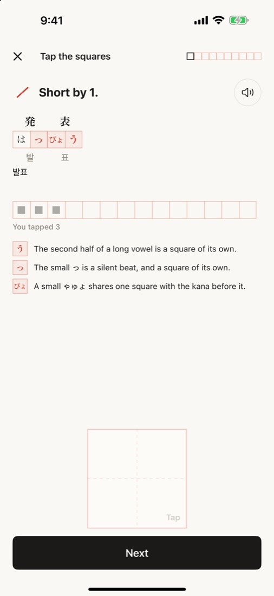
칸 두드리기
Tap the squares
단어를 보지 않고 듣기만 하고, 들리는 박마다 한 번씩 두드립니다. 장음의 뒷부분, 작은 っ, ん처럼 귀가 빠뜨린 칸을 짚어 줍니다.
Hear a word without seeing it and tap once for every beat. The squares your ear dropped are pointed out.
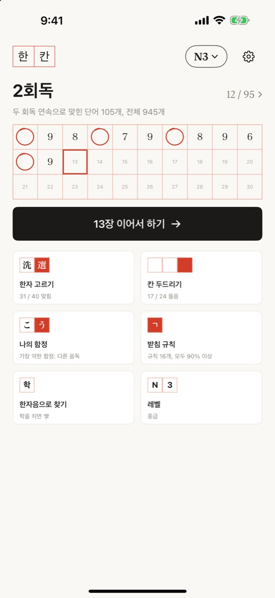
회독
Rounds
10문제가 한 장, 한 회독이 원고지 한 장입니다. 다음 회독은 전체 단어 또는 틀린 단어만.
Ten questions to a chapter, a round to a page of manuscript paper; the next round goes over every word or only the missed ones.
가격Pricing
처음 50단어는 레벨마다 무료
The first 50 words of every level are free
무료
Free
- N5부터 N1까지 레벨마다 처음 50단어
- 받침 규칙 16개와 한자음으로 찾기 전부
- 한자 고르기, 칸 두드리기, 함정 지도, 회독
- The first 50 words of every level, N5 to N1
- All sixteen rules and the kanji look-up
- Pick the kanji, tap the squares, the trap map, rounds
이용권
Pass
- JLPT 한자어 읽기 4,311문제와 표기 3,354문제 전부
- 월간, 연간 구독 또는 평생 이용권
- 가격은 App Store에서 사는 나라의 통화로 표시됩니다
- All 4,311 reading and 3,354 spelling questions
- Monthly or yearly subscription, or a lifetime pass
- Prices are shown by the App Store in your currency
FAQ
일본어 음성은 사람이 녹음했나요?Is the Japanese voice recorded by a person?
아니요. AI 음성 모델로 미리 만들어 단어마다 받아쓰기로 확인한 음성을 앱에 담았습니다. 일부 단어는 기기에 내장된 음성으로 읽습니다.
No. It was made in advance with an AI voice model and checked word by word by transcription. A few words are read by the device's own voice.
인터넷이 필요한가요?Do I need to be online?
아니요. 단어, 예문, 음성, 규칙이 모두 앱 안에 들어 있습니다. 구매 확인에만 App Store 연결이 쓰입니다.
No. Every word, sentence, voice clip and rule is in the app. Only purchases talk to the App Store.
규칙이 틀리는 단어도 있나요?Do the rules ever fail?
네, 그래서 적중률을 그대로 보여 드립니다. 앱은 규칙이 실제로 맞는 칸에서만 규칙을 보여 주고, 규칙 밖의 칸은 "외울 칸"이라고 알려 줍니다.
Yes, which is why every rate is shown. The app only shows a rule on a square where it holds, and says so plainly when no rule decides a square.
JLPT 주관 기관과 관련이 있나요?Is this app affiliated with the JLPT?
아니요. JLPT는 국제교류기금과 일본국제교육지원협회가 시행하는 시험이며, 한 칸은 두 기관과 관련이 없는 독립 앱입니다. 실제 기출문제는 들어 있지 않습니다.
No. The JLPT is run by the Japan Foundation and Japan Educational Exchanges and Services; Hankan is independent of both and contains no actual test questions.